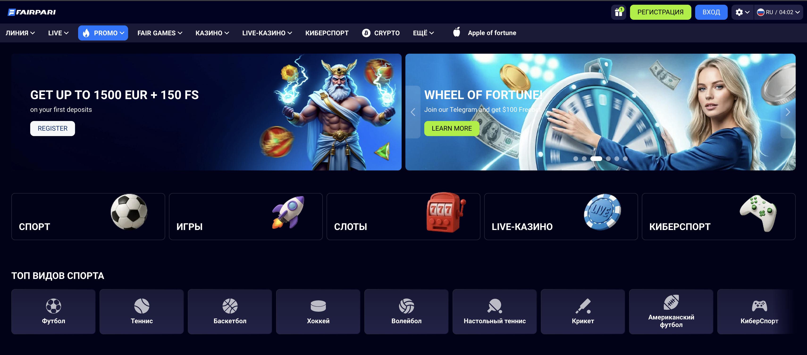
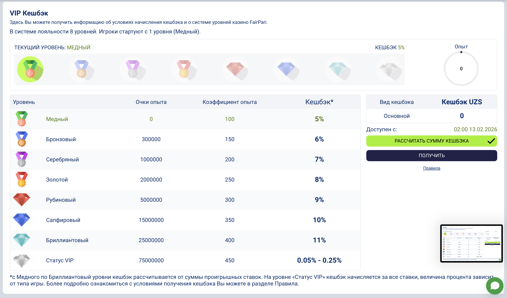
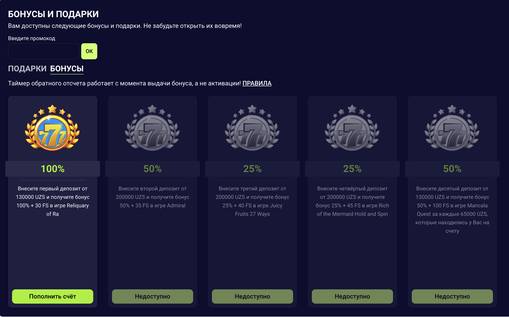
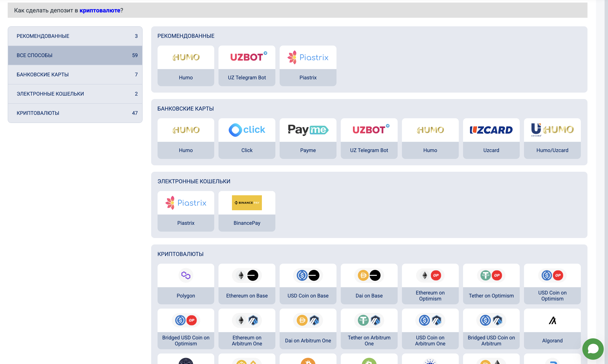
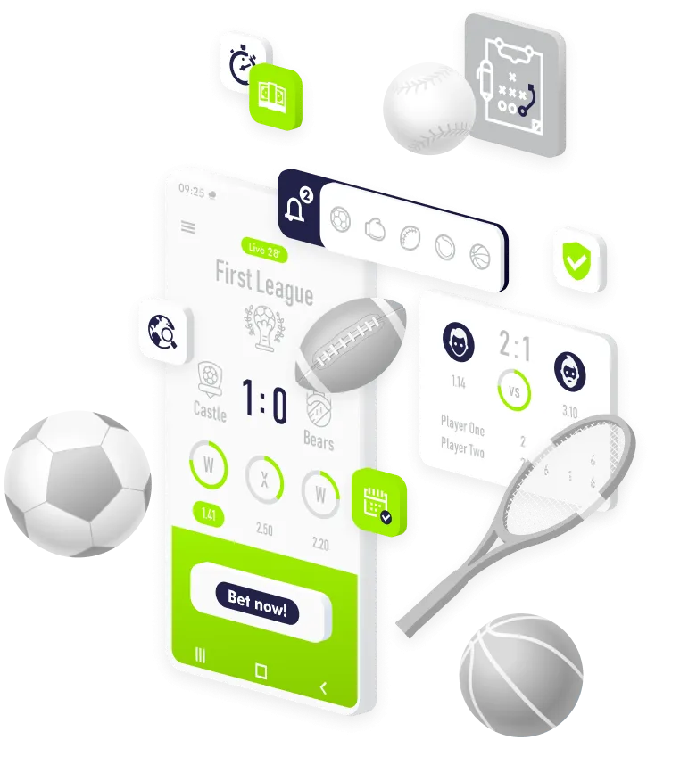

FairPari в Узбекистане
безопасный вход, рабочее зеркало и честный разбор бонусов
Мы ежедневно проверяем рабочие зеркала FairPari, разбираем условия бонусов в сумах и шаг за шагом объясняем, как играть безопасно. Всё — на русском и узбекском языках, с акцентом на игроков из Узбекистана.
18+ Азартные игры несут финансовые риски. Вся информация на сайте носит справочный характер и не является призывом к ставкам.
Почему FairPari популярен среди игроков из Узбекистана
Что такое FairPari в двух словах
FairPari — это международная платформа для ставок на спорт и онлайн‑казино, работающая по лицензии Curaçao (OGL/2024/1143/0865) и доступная игрокам из Узбекистана через рабочие зеркала. Подробные обзоры сервиса представлены на сайтах fairparilogin.com, fairparipromocode.com и fairpari-bet.com.
Эти ресурсы хорошо раскрывают функционал платформы, но часто перегружены текстом и не адаптированы под конкретно узбекский GEO и двухъязычную аудиторию. Наш сайт решает эту задачу, сохраняя глубину, но улучшая UX и понятность.

Ключевые преимущества для Узбекистана
- Ставки в UZS и удобные способы пополнения/вывода через международные платёжные системы.
- Русский и узбекский интерфейс — как на сайте, так и в поддержке.
- Высокие коэффициенты и широкий выбор событий по футболу, теннису, киберспорту.
- Мобильное приложение и PWA‑версия для iOS для ставок со смартфона.
- Регулярные бонусы и кэшбек‑программы для постоянных игроков.

Как безопасно войти в FairPari через рабочее зеркало
Одна из главных тем, которые подробно разбираются на fairparilogin.com/uz и fairparipromocode.com/en, — это проблема блокировок и необходимость использовать официальные зеркала. Мы собрали этот опыт и упростили схему входа.
Пошаговая инструкция по входу
- Откройте одно из проверенных зеркал в блоке выше или добавьте эту страницу в закладки.
- Убедитесь, что домен принадлежит FairPari (переход по кнопке “Перейти на рабочее зеркало FairPari”).
- Введите логин и пароль, созданные при регистрации; не используйте те же данные, что для почты/банка.
- Включите двухфакторную аутентификацию (если доступна) через телефон или email.
- Сразу после входа проверьте раздел “Профиль” и заполните все данные — это ускорит будущие выводы средств.
Как не попасть на фейковый сайт
- Не переходите по ссылкам из случайных Telegram‑каналов и комментариев.
- Проверяйте адресную строку: лишние символы и странные поддомены — тревожный сигнал.
- Сверяйте зеркала с теми, что публикуются в авторитетных обзорах и на этой странице.
- При малейших сомнениях не вводите логин и пароль и закройте вкладку.
Бонусы FairPari в 2026 году: что действительно выгодно
На сайтах fairparilogin.com/uz и fairparipromocode.com/en подробно расписаны приветственные пакеты и еженедельные акции. Мы собрали ключевую информацию в компактной таблице и выделили условия, на которые чаще всего не обращают внимания.
Приветственные бонусы (пример для UZS)
🎁 Приветственные пакеты
| Тип бонуса 🎯 | Максимум 💰 | Мин. депозит 💵 | Отыгрыш ⏳ |
|---|---|---|---|
| Спорт, первый депозит | 100% до 1 300 000 UZS | 13 000 UZS | 5× суммы бонуса, только экспрессы |
| Казино, пакет 1–4 депозита | до 19 500 000 UZS + 150 FS | от 130 000 UZS | 35× на каждый этап, 7 дней на отыгрыш |

Конкретные цифры и актуальные акции уточняйте на fairparilogin.com/uz и непосредственно на сайте FairPari — условия могут меняться.

Как не потерять бонус
- Перед активацией бонуса обязательно прочитайте раздел “Условия и положения” (wager, лимит ставок, сроки).
- Выбирайте либо спорт, либо казино — оба приветственных пакета одновременно взять нельзя.
- Не превышайте максимальную ставку при отыгрыше (нарушение часто обнуляет выигрыш по бонусу).
- Не открывайте несколько аккаунтов ради повторного бонуса — это ведёт к блокировке.
Регулярные акции и кэшбек
- Еженедельные бонусы на депозиты (например, “Бонусная пятница” с упрощённым отыгрышем).
- Кэшбек по ставкам в спорте и казино, зависящий от уровня в VIP‑программе.
- Готовые экспрессы дня с повышенными коэффициентами.
- Опция страхования ставки (Bet Insurance) для снижения риска на крупных купонах.


Пополнение и вывод средств для игроков из Узбекистана
По данным обзоров на fairparilogin.com/uz и fairparipromocode.com/en, FairPari делает ставку на быстрые выплаты через электронные кошельки и карты. Время вывода после верификации счета обычно составляет от 15 минут до нескольких часов для кошельков и до 1–3 рабочих дней для карт.
Типичные методы пополнения / вывода
💳 Платёжные методы
| Метод 🧾 | Тип ⚙️ | Мин. депозит 💵 | Срок вывода ⏱️ |
|---|---|---|---|
| Skrill / Neteller | Эл. кошелёк | ≈ 130 000 UZS | ~15 минут после одобрения |
| Piastrix | Эл. кошелёк | от 13 000 UZS | ~15 минут |
| Банковские карты | Visa / MasterCard | эквивалент от ~10 EUR | 1–3 рабочих дня |
Для безопасности обычно требуется выводить средства тем же методом, что использовался при пополнении. Это стандартная мера против мошенничества и отмывания средств.

Мобильное приложение FairPari: Android и iOS
Android (APK с сайта FairPari)
- Откройте рабочее зеркало FairPari со смартфона Android.
- Перейдите в раздел “Мобильные приложения” и скачайте APK‑файл.
- Разрешите установку приложений из неизвестных источников в настройках телефона.
- Установите приложение и войдите в аккаунт.

iOS (PWA через Safari)
- Откройте рабочее зеркало FairPari в Safari.
- Нажмите кнопку “Поделиться” и выберите “На экран «Домой»”.
- Подтвердите создание ярлыка.
- Запускайте FairPari с иконки — сайт откроется в полноэкранном режиме как приложение.
Лицензия, безопасность и ответственная игра
По информации, приведённой на fairparilogin.com/uz, fairparipromocode.com/en и fairpari-bet.com/pl, платформа FairPari принадлежит компании CENTRALD B.V. и работает по лицензии Curaçao Gaming Control Board (OGL/2024/1143/0865). Это означает, что оператор подчиняется базовым требованиям AML и KYC, а игры проходят аудит.
Как FairPari защищает игроков
- Использование шифрования SSL/TLS для передачи данных и платежей.
- Проверка личности (KYC) перед крупными выводами средств.
- Мониторинг аномальной активности и блокировка подозрительных аккаунтов.
- Инструменты самоконтроля: самоблокировка аккаунта, лимиты депозита (по запросу в поддержку).
Ответственная игра
- Рассматривайте ставки как развлечение, а не способ заработка.
- Никогда не играйте на деньги, которые не можете позволить себе потерять.
- Заранее установите лимиты по времени и сумме, которых будете придерживаться.
- При признаках зависимости обратитесь в профильные организации и заблокируйте аккаунт.
Частые вопросы об FairPari в Узбекистане
Информация на этой странице основана на публичных обзорах FairPari (включая fairparilogin.com/uz, fairparipromocode.com/en, fairpari-bet.com/pl) и носит справочный характер. Проверяйте актуальные условия бонусов, лимитов и платежей непосредственно на сайте FairPari.
Nega FairPari Oʻzbekistonda mashhur?
FairPari qisqacha
FairPari — xalqaro sport tikish va onlayn kazino platformasi bo‘lib, Curaçao litsenziyasi (OGL/2024/1143/0865) asosida ishlaydi va Oʻzbekistondagi oʻyinchilarga ishchi ko‘zgular orqali xizmat ko‘rsatadi.
FairPari haqida batafsil sharhlar fairparilogin.com/uz, fairparipromocode.com/en va fairpari-bet.com/pl saytlarda berilgan. Biz ularning eng foydali qismlarini qisqa va tushunarli formatda toʻpladik.
Oʻzbekistondagi oʻyinchilar uchun afzalliklar
- Soʻmda (UZS) tikish va qulay toʻlov usullari.
- Rus va oʻzbek tillari — sayt, qoʻllab-quvvatlash va promo materiallarda.
- Yuqori koeffitsientlar va futbol, tennis, kibersport bo‘yicha keng chiziq.
- Android ilova va iOS PWA — telefon orqali o‘ynash uchun.
- Bonuslar va cashback — yangi va doimiy mijozlar uchun.
FairPari hisobiga xavfsiz kirish va ishchi ko‘zgular
fairparilogin.com/uz va fairparipromocode.com/en saytlari kirish va ko‘zgular mavzusini batafsil yoritadi. Biz bu ma’lumotlarni Oʻzbekiston uchun soddalashtirilgan tartibda jamladik.
Qadam-baqadam kirish tartibi
- Ushbu sahifadagi tekshirilgan ko‘zgulardan birini oching yoki sahifani “Sevimlilar”ga qoʻshing.
- Domen nomi FairPari’ga tegishli ekaniga ishonch hosil qiling (asosiy tugma orqali o‘ting).
- Ro‘yxatdan o‘tishda yaratgan login va parolingizni kiriting; bank yoki pochtadagi kabi paroldan foydalanmang.
- Mumkin bo‘lsa, telefon yoki email orqali ikki bosqichli himoyani yoqing.
- Kirishdan so‘ng “Profil” bo‘limidagi barcha ma’lumotlarni to‘ldiring — bu pul yechishda vaqtni tejaydi.
Soxta saytni qanday aniqlash mumkin?
- Tasodifiy Telegram kanallaridagi va forumdagi havolalarga ishonmang.
- Manzil satrini tekshiring: gʻalati qoʻshimcha soʻzlar va subdomenlar xavfli bo‘lishi mumkin.
- Ko‘zgularni faqat ishonchli manbalardan va shu sahifadagi roʻyxatdan oling.
- Shubha bo‘lsa, login va parolni kiritmang, sahifani darhol yoping.
FairPari bonuslari 2026: qaysi biri foydaliroq?
fairparilogin.com/uz va fairparipromocode.com/en saytlari bonuslar haqida juda batafsil yozgan. Quyidagi jadval esa Oʻzbekistondagi yangi oʻyinchi uchun eng asosiy nuqtalarni qisqa koʻrinishda ko‘rsatadi.
Start bonuslari (UZS misolida)
🎁 Start bonuslari
| Bonus turi 🎯 | Maksimum 💰 | Min. depozit 💵 | O‘ynash talabi ⏳ |
|---|---|---|---|
| Sport, birinchi depozit | 100% gacha 1 300 000 UZS | 13 000 UZS | Bonus summasining 5×, faqat ekspresslar |
| Kazino, 1–4 depozit paketi | 19 500 000 UZS + 150 FS gacha | 130 000 UZS dan boshlab | 35× har bosqichda, 7 kun ichida |
Aniq raqamlar va joriy aksiyalarni FairPari saytidagi “Bonuslar” bo‘limida tekshiring — takliflar vaqti-vaqti bilan yangilanadi.
Bonusni yoʻqotmaslik uchun maslahatlar
- Bonusni faollashtirishdan oldin albatta shartlarini o‘qing (wager, maksimal tikish, muddatlar).
- Roʻyxatdan oʻtganda yoki sport, yoki kazino bonusini tanlang — ikkisini birdan olmaydi.
- O‘ynash paytida maksimal tikish limitini buzmaslikka harakat qiling.
- Yangi bonus olish uchun bir nechta akkaunt ochmang — bu barcha hisoblarning bloklanishiga olib keladi.
Haftalik aksiyalar va cashback
- “Bonus juma”, “Dushanba bonusi” kabi haftalik depozit aksiyalari.
- Sport va kazino boʻyicha net yo‘qotishlardan ma’lum foizda qaytarma (cashback).
- Tayyor “Ekspress kuni” kuponlari oshirilgan koeffitsientlar bilan.
- Stavkani sugʻurtalash funksiyasi — katta summali kuponlarda riskni kamaytirish uchun.
Oʻzbekistondagi oʻyinchilar uchun toʻlovlar va pul yechish
Sharhlarga ko‘ra, FairPari elektron hamyonlar va kartalar orqali tezkor toʻlovlarni taklif qiladi. Hisobingiz tekshirilgandan (KYC) soʻng, elektron hamyonlarga pul yechish odatda 15 daqiqa atrofida, kartalarga esa bir necha ish kuni ichida amalga oshiriladi.
Asosiy to‘lov usullari (misol tariqasida)
💳 Toʻlov usullari
| Usul 🧾 | Turi ⚙️ | Min. depozit 💵 | Yechish muddati ⏱️ |
|---|---|---|---|
| Skrill / Neteller | Elektron hamyon | ≈ 130 000 UZS | Taxminan 15 daqiqa |
| Piastrix | Elektron hamyon | 13 000 UZS dan | Taxminan 15 daqiqa |
| Bank kartalari | Visa / MasterCard | ~10 EUR ekvivalenti | 1–3 ish kuni |
Xavfsizlik sababli, odatda pul depozit qilingan usulga qaytarilishi kerak.
FairPari mobil ilovasi: Android va iOS
Android uchun APK
- Android telefoningizdan ishchi FairPari ko‘zgusini oching.
- Sahifaning pastida joylashgan “Mobil ilovalar” bo‘limiga o‘ting.
- APK faylni yuklab oling va “Noma’lum manbalardan oʻrnatishga ruxsat berish”ni yoqing.
- Ilovani oʻrnatib, login va parolingiz bilan tizimga kiring.
iOS uchun PWA (Safari orqali)
- Safari brauzeridan ishchi FairPari ko‘zgusini oching.
- Pastdagi “Ulashish” (Share) tugmasini bosing.
- “Uy ekraniga qo‘shish” bandini tanlang.
- Yorliq nomini saqlang — endi sayt ilova kabi toʻliq ekran rejimida ochiladi.
Litsenziya, xavfsizlik va mas’uliyatli oʻyin
Ochiq manbalarga (jumladan fairparilogin.com/uz va fairparipromocode.com/en) koʻra, FairPari sayti CENTRALD B.V. kompaniyasiga tegishli boʻlib, Curaçao Gaming Control Board litsenziyasi (OGL/2024/1143/0865) asosida ishlaydi.
Xavfsizlik choralari
- Ma’lumotlarni uzatishda SSL/TLS shifrlash protokollari qoʻllaniladi.
- Katta yechimlar oldidan shaxsni tasdiqlash (KYC) talab qilinadi.
- G‘ayritabiiy faollik aniqlansa, hisob qo‘shimcha tekshiruvga yuboriladi.
- Oʻzini oʻzi cheklash vositalari: ma’lum muddatga akkauntni bloklash, depozit limitlari.
Mas’uliyatli oʻyin boʻyicha tavsiyalar
- Stavkani daromad manbai sifatida emas, vaqt oʻtkazish vositasi sifatida qabul qiling.
- Faqat yo‘qotishga tayyor bo‘lgan mablag‘laringiz bilan oʻynang.
- Oldindan vaqt va pul limiti qo‘yib, ularga qat’iy rioya qiling.
- Qaramlik alomatlari paydo boʻlsa, mutaxassislar va yordam tashkilotlariga murojaat qiling.
FairPari boʻyicha tez-tez soʻraladigan savollar
Ushbu sahifadagi ma’lumotlar ochiq manbalardagi FairPari sharhlariga asoslangan bo‘lib, faqat ma’lumot uchun taqdim etiladi. Bonuslar, limitlar va to‘lovlar boʻyicha eng so‘nggi shartlarni bevosita FairPari rasmiy saytida tekshiring.